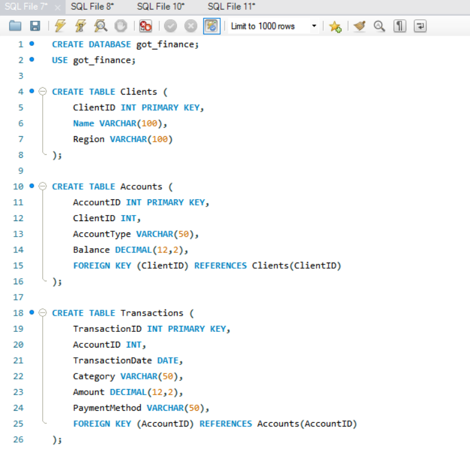
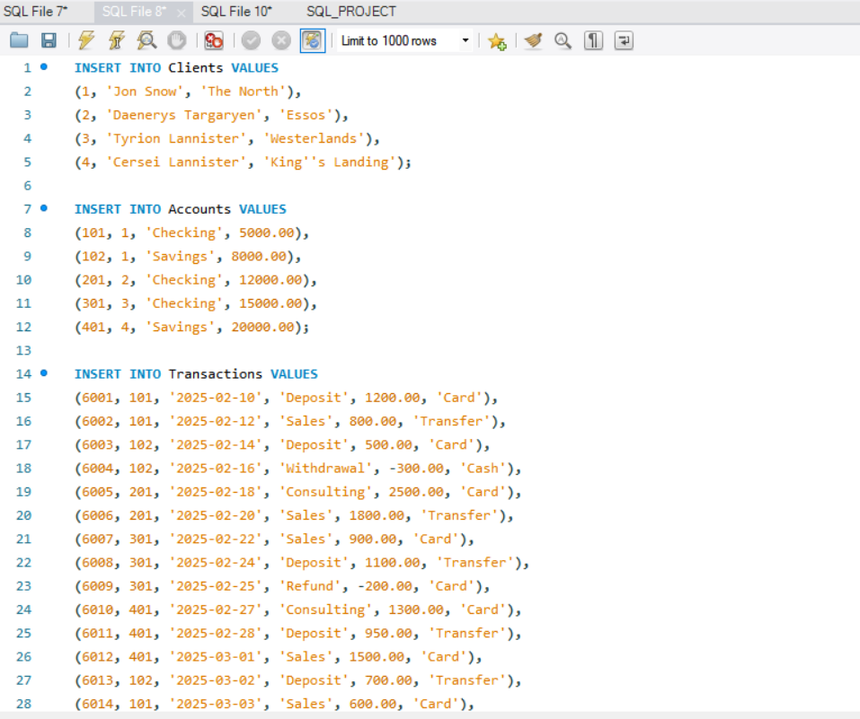
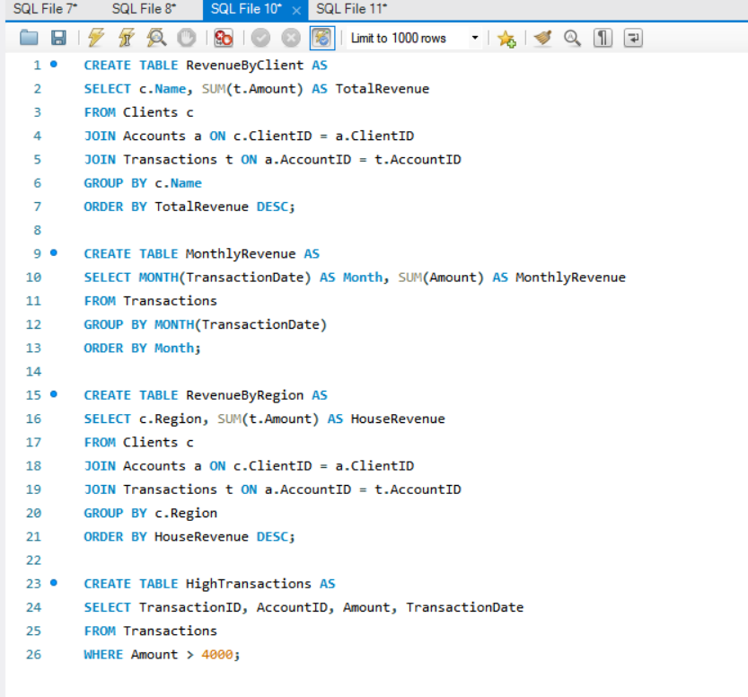
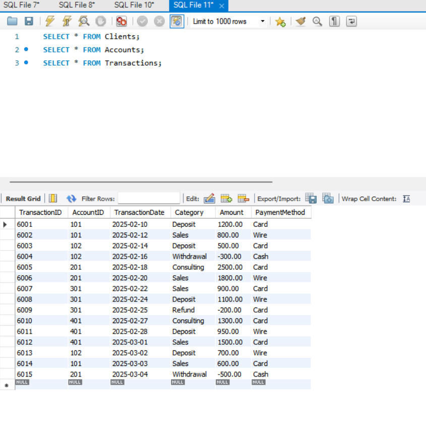

My first Python project:
PYTHON_PROJECT_SURAYA
SQL Game of Thrones Project
This SQL project demonstrates my ability to design and work with relational databases.
I created a Game of Thrones-themed database to practice building tables, managing relationships,
and writing queries for analysis. The project is a fun way for me to combine my interests with technical skills
while simulating real-world financial and transactional data management.
Tools That I Used
- Python
- Lists and dictionaries to store and process data
- Loops and calculations for aggregating numbers
- Text-based charts for a quick visual overview
What I Did
- Calculated revenue per order – multiplying units sold by unit price for each transaction.
- Summarized overall sales – total revenue and average revenue per order.
- Analyzed revenue by product – to see which products were bringing in the most cash.
- Analyzed revenue by customer – which characters are the biggest spenders?
- Checked revenue by month – spotting trends over time.
- Created text-based charts – because even simple visualizations help tell the story.



